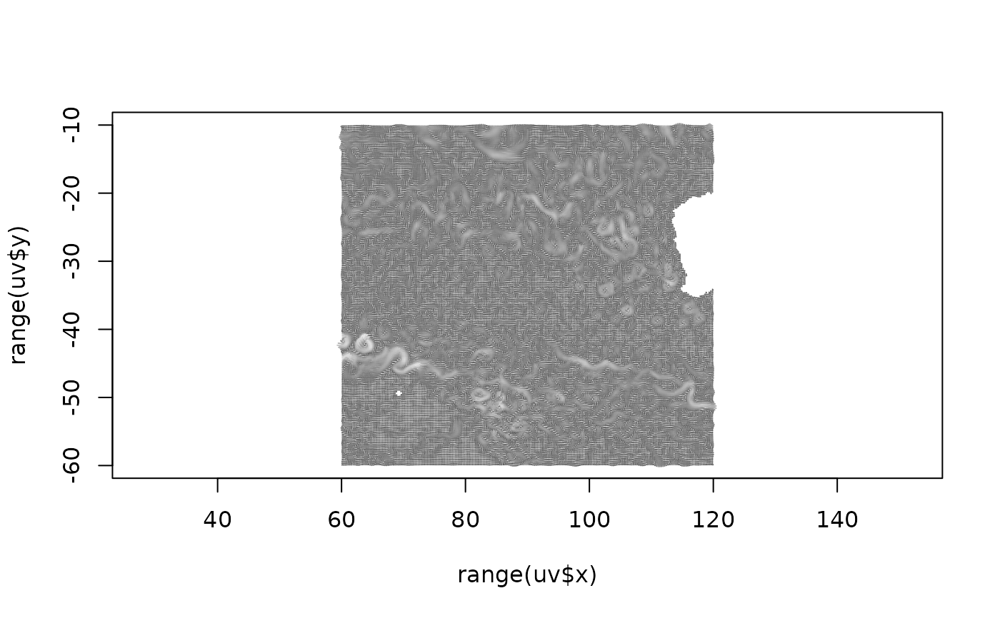

Read meridional and zonal components of surface currents (m/s) from altimetry products. Input
is optional, with date and xylim. As with the grid reading functions read_ugos_daily and read_vgos_daily
this by default will return the latest data available and for the entire world.
table_uvgos( date, xylim = NULL, ..., xy = TRUE, cell = FALSE, na.rm = TRUE, latest = TRUE, res = NULL )
| date | dates to read |
|---|---|
| xylim | extent of data to read |
| ... | arguments passed to read functions (only |
| xy | include coordinates of cell in the output, |
| cell | include cell index in the output, |
| na.rm | by default missing values are removed, set to |
data frame of u, v, x,y (longitude,latitude), cell, and date
Please note that the coordinates are in longitude latitude, but the velocity components are in m/s. You cannot meaningfully transform the x,y coordinates and use the velocity components without taking into account rotation in the transformation (we might write some helpers for this ...).
Argument lon180 may be used to specify Pacific or Atlantic orientation.
uv <- table_uvgos("2001-01-01", xylim = extent(60, 120, -60, -10)) plot(range(uv$x), range(uv$y), type = "n", asp = 1.1)scal <- function(x) (x - min(x, na.rm = TRUE))/diff(range(x, na.rm = TRUE)) nn <- 56 arrows(uv$x, uv$y, uv$x + uv$u, uv$y + uv$v, col = grey.colors(nn)[scal(sqrt(uv$u^2 + uv$v^2)) * (nn-1) + 1], length = 0)